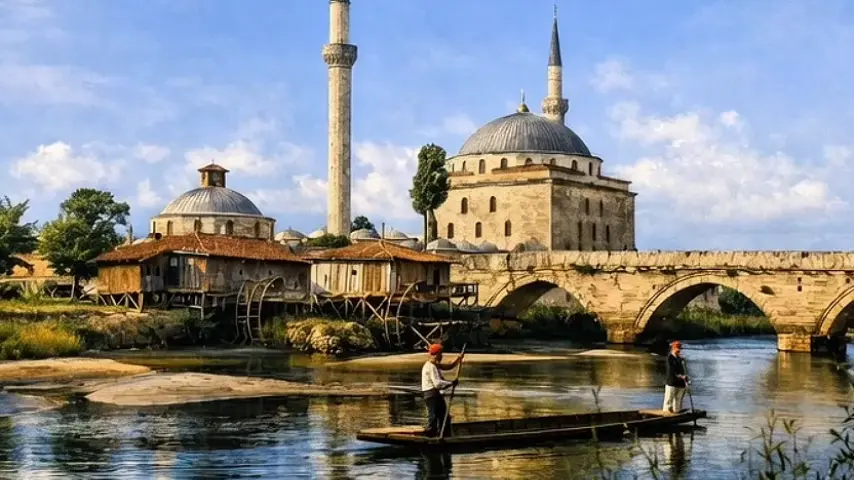
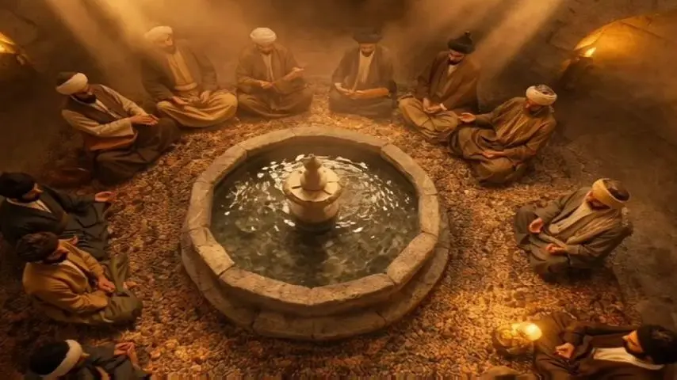
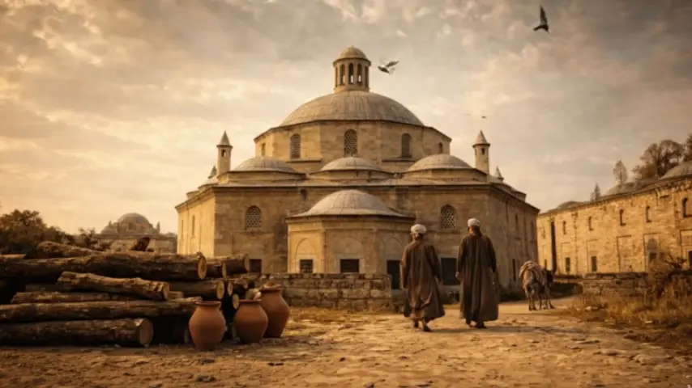
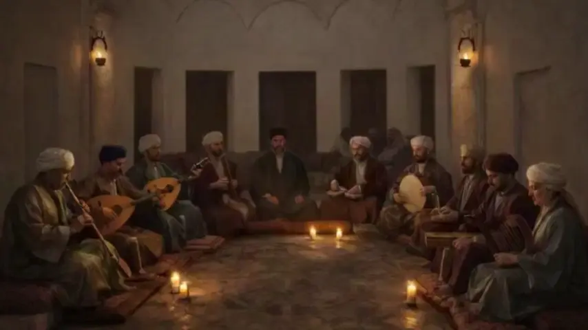
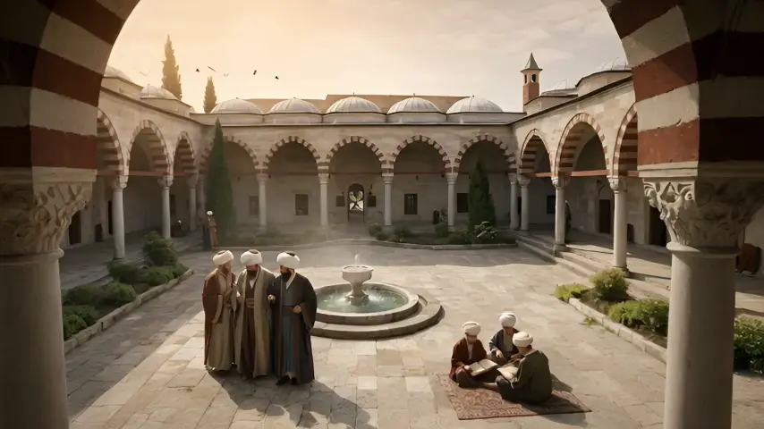
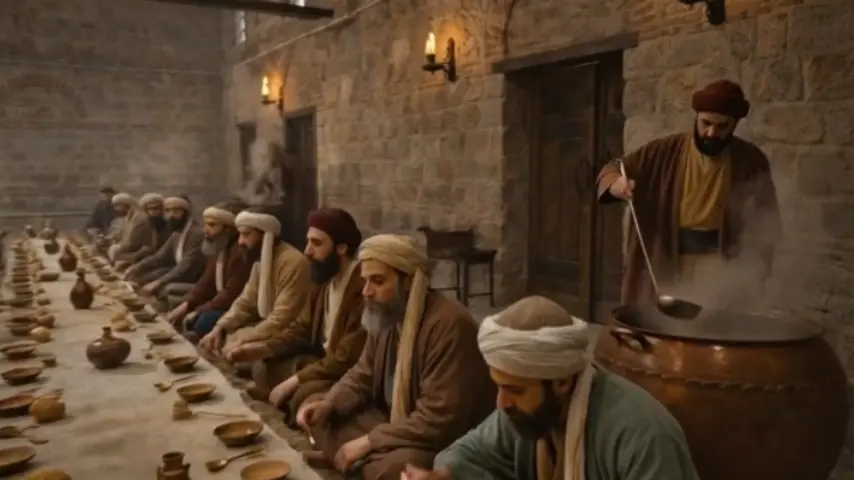

Şu an Edirne'nin en çok ilgi çeken tarihi alanlarından birinde, Sultan II. Bayezid Külliyesi Sağlık Müzesindesiniz. Tarih ile şifanın buluştuğu bu alana hoş geldiniz.
✦
🏗️ YAPI
Fatih Sultan Mehmet'in oğlu ve 8. Osmanlı Padişahı Sultan II. Bayezid tarafından, dönemin mimarbaşı Hayrettin'e yaptırılan bu yapılar topluluğu, Osmanlı külliyeleri içinde günümüze en sağlam olarak ulaşmış olan külliyedir. Merkezinde camii, sağ tarafında darüşşifa ve medrese, sol tarafında imaret ve kiler, caminin kenarlarına bitişik olarak yapılmış misafirhane ve arka tarafta Tunca Nehri üzerindeki köprüsüyle Osmanlı'nın sosyal devlet anlayışını en güçlü biçimde yansıtan sağlık, sosyal, kültürel, eğitim ve dini yapıları içinde barındırır.
✦
🎧 REHBER
Külliyeyi ve müzemizi daha bilinçli şekilde gezmeniz için size yazılı, sesli ve görsel olarak yardımcı olmaya çalışacağım.
Şu an bilet gişemizi geçtiniz ve ön bahçemizde bulunuyorsunuz. Tam karşıdaki duvarda asılı bulunan büyük külliye fotoğrafının önünde durunuz ve tarihimizin bu yapılar topluluğunun Edirne şehrindeki konumunu inceleyiniz.
🏫 YÖN BULMA
Bu noktaya doğru yürürken sağ tarafınızda kalan yapı külliyenin Tıp Medresesi, karşınızdaki yapı ise külliyenin belki de kalbi ve müzemizin merkezi olan Darüşşifa'dır.
👣 Büyük fotoğrafı inceledikten sonra hemen sol tarafınızda bulunan kapıdan Darüşşifa'nın bahçesine giriniz.

Darüşşifa Girişi
🏛️ ADALET VE ŞİFA KAPISI
⚖️ ŞİFANIN İLK DURAĞI
🏥 DARÜŞŞİFA 1. AVLU
Şu anda, Osmanlı'nın önemli şifa merkezlerinden biri olan Edirne Darüşşifası'nın ilk avlusundasınız. Lütfen burada kısa bir an durup çevrenizi gözlemleyin.
✦
🌍 TARİHSEL ÖNEM
Öncelikle şunu bilmelisiniz: Bu yapı, merkezi ve ayrıntılı planlanmış hastanelerin tarihteki ilk örneklerinden biri olarak kabul edilir. Batı'daki benzerlerine ancak yaklaşık 200 yıl sonra rastlanan bu hastanede, tedavi ve hizmet alanları döneminin ötesinde bir mimari anlayışla hayata geçirilmiştir.
🛏️ HİZMET BİRİMLERİ
Önünüzdeki yoldan ilerlediğinizde, girişin hemen solunda yer alan dört oda Darüşşifa'nın hizmet birimleridir. Bu odalar; personel odası, çamaşırhane, diyet mutfağı ve erzakların depolandığı kiler olarak yan yana sıralanmıştır.
🩺 POLİKLİNİK ODALARI
Sağ tarafınızda, sütunların arkasında bulunan altı oda ise poliklinik odalarıdır. Günlük hasta muayeneleri, bakımları ve acil müdahaleler bu odalarda gerçekleştirilirdi. Kuruluş yıllarında bu odalardan biri, "kehhal" adı verilen göz hekimlerine ayrılmıştı.
🧭 YÖNLENDİRME
Çeşitli canlandırmalar ve bilgilendirme panolarıyla düzenlenmiş bu odaları ayrıntılı gezmeyi dönüşünüze bırakarak, şimdi sizi sunum odamıza doğru yönlendirelim. İlk avlunun ilerisinde, sol tarafta yer alan odamız sunum odasıdır. Oraya doğru yürürken, solunuzda kalan kuyuya dikkatinizi çekmek isterim.
💧 SÜT KUYUSU
İçindeki suyun, yeni doğum yapan annelerin sütünü artırdığına inanıldığı için "Süt Kuyusu" olarak adlandırılan bu taş yapının yaklaşık 20 metre ilerisinde, çimlerin arasında bir ağaç ve ona sarılmış bir sarmaşık göreceksiniz.
🌿 AĞAÇ VE SARMAŞIK
Bu noktaya yaklaştığınızda, çimler içindeki panoda Ahmet Kutsi Tecer'in bu ağaç için kaleme aldığı hüzünlü sevda şiirini mutlaka okuyun. Ardından, o duyguyla ağaca ve sarmaşığa bir kez daha bakmanızı öneririm.
🎬 SUNUM ODASI
Şiirin devamında, hemen sol tarafta sunum odamız yer almaktadır. Burada, Külliye'nin ve Darüşşifanın tarihçesi ile gelişimini anlatan videoyu izleyerek bulunduğunuz mekânın tıp ve mimarlık tarihindeki önemine dair kapsamlı bilgi edinebilirsiniz.
🎬 Sunum videosunu izlemek ister misiniz? Sunum odasında izleyebilir veya aşağıdaki butona basarak telefonunuzda izleyebilirsiniz.

Sunum Odasından Çıkış
🏛️ BİLGİDEN DENEYİME
🏛️ İDARE VE NİZAM
🚪 2. AVLUYA GEÇİŞ
Sunum odasından çıkar çıkmaz, hemen solunuzdaki görkemli kapıdan geçip yönetici odalarının bulunduğu ikinci avluya geçiniz.
🏛️ YÖNETİCİ ODALARI
Bu avluda sağda ve solda ikişerden 4 oda bulunur. Hekim başı ve diğer hekimler bu odaları kullanır; hastanenin tüm işleri bu odalarda planlanıp yürütülürdü. Külliyenin yapıldığı yıllarda bu darüşşifada 1 hekimbaşı, iki hekim, 2 cerrah, 2 göz hekimi ve 1 eczacı bulunurdu.
🔒 İDARİ BÖLÜM
İdari odaların bulunduğu bu bölüm aynı zamanda ilk avludaki günlük hasta sirkülasyonuyla, biraz sonra gireceğiniz yataklı tedavi bölümü arasında koruyucu bir bariyer oluşturma amacı güderdi.
✨ KİTABE VE GİRİŞ
Şimdi kapının üzerinde yazılı şifahanenin kitabesini okuduktan sonra nefesinizi tutunuz…
🚶♂️ Müzik ve su sesinin şifayla buluştuğu bu büyülü alana giriş yapınız.

Büyük Şifahane (SEKİZGEN BÖLÜM)
🏛️ DARÜŞŞİFA EŞİĞİ
🌊 RUHUN ŞİFAYA KAVUŞTUĞU ZİRVE
🏥 YATAKLI TEDAVİ BÖLÜMÜ
Şu an müzemizin kalbinde ve Edirne Darüşşifası'nın yataklı tedavi bölümündesiniz. Bu bölümde, 500 yıl öncesinin şifa yurdunda, asırlar boyunca şifa bulmuş insanların hissiyatıyla dolaşınız.
🌊 HASTANENİN YAPISI
Öyle bir hastane düşünün ki sizi, ortada suyu belli bir ritimle akan bir şadırvan ile hemen tam karşıda bulunan müzik sahnesi karşılasın. Geniş kubbenin örttüğü bu merkezi planlı hastane, 6 kışlık, 4 yazlık hasta odası ile bir müzik sahnesinden meydana gelir. Geniş kubbedeki aydınlatma feneri aynı zamanda hastanenin kötü kokularını dışarı atar. Zemindeki meyilli döşeme ve devamındaki kanallar ise hastanenin kolay yıkanıp temizlenmesi içindir.
🎵 MÜZİKLE TEDAVİ
Bu hastaneyi diğerlerinden ayıran en büyük özellik, tedavide dönemin hekimlik bilgilerinin yanında müzik makamlarının da kullanılmış olmasıdır. Tedavi esnasında 10 kişiden oluşan musiki grubunun, hekimlerin önerileri doğrultusunda her hastalığa göre çalıp söyledikleri müzik makamlarının çeşitli hastalıklara iyi geldiği düşünülürdü.
💧 SUYLA TEDAVİ
Yapının tam ortasında bulunan şadırvandan akan suyun çıkardığı ses, tedavinin önemli bir parçasıydı ve hastaları rahatlatmaya yönelikti.
🌿 KOKU TEDAVİSİ
Darüşşifada müzik ve su sesine ek olarak koku tedavisi de uygulanırdı. Darüşşifa avlusu ve çevresinde yetiştirilen çeşitli bitkilerin yaydığı kokular da tedavinin önemli bir parçasıydı.
🧺 MEŞGULİYET TEDAVİSİ
Ayrıca meşguliyet de bu hastanede tedavi amacıyla kullanılıyordu. Hastalar, sepet ve örgü örmenin yanı sıra çeşitli el işleriyle meşgul edilir, dertlerinden ve düşüncelerinden uzaklaştırılmaya çalışılırdı.
🚶 ÇIKIŞ VE GEZİ
Osmanlı tıbbının farklı özelliklerinin tanıtıldığı odaları gezdikten sonra yataklı tedavi bölümünden çıkabilirsiniz. Aralıksız olarak 400 yıl hizmet veren bu şifa yurdundan çıkarken zamanınız doğrultusunda ikinci ve birinci avludaki diğer odaları da gezebilir hem Edirne Darüşşifası hem de Osmanlı hekimliği ile ilgili farklı bilgilere ulaşabilirsiniz.
🏫 TIP MEDRESESİNE DOĞRU: Darüşşifadan çıkıp büyük fotoğrafın olduğu giriş bahçesinin sol tarafında bulunan Tıp Medresesine doğru yürüyünüz.

Tıp Medresesi
🎓 İLMİN VE HEKİMLİĞİN BEŞİĞİ
📚 HEKİMLERİN YETİŞTİĞİ OCAK
🏫 TIP MEDRESESİ
Darüşşifayı dolaştınız ve şimdi de külliyenin çok önemli bir başka bölümüne geçtiniz. Burası Sultan II. Bayezid Külliyesi Tıp Medresesi'dir. Sağ ve karşı taraftaki müze olarak düzenlenmiş odalara geçmeden önce durunuz ve bu eşsiz mekânı inceleyiniz.
🌍 TARİHSEL ÖNEM
Şu an kare planlı bir avlu etrafında şekillenen bir bina olarak gördüğünüz bu mekân, Osmanlı İmparatorluğu'nda hekim yetiştiren en seçkin eğitim kurumlarından biriydi ve yüzyıllar boyunca birçok önemli hekimin yetiştiği önemli bir ilim merkezi konumundaydı.
📚 EĞİTİM SİSTEMİ
Osmanlı eğitim sistemi içinde en üst düzey kabul edilen "60'lık ve altmış üstü medreseler" arasında yer alan bu yapıda öğrenciler, almış oldukları teorik eğitimlerini hemen yanındaki darüşşifada uygulama imkânı bularak bilgilerini pratikle pekiştirirlerdi.
🏛️ MİMARİ YAPI
Ortasında günümüze ulaşmayan bir şadırvan ve köşede su ihtiyaçlarının karşılandığı bir kuyusu bulunan medrese, üç yönde sıralanmış 18 öğrenci odası ve tam karşıda yer alan bir dershaneden oluşmaktadır.
📜 EVLİYA ÇELEBİ
1652 yılında külliyeyi ziyaret eden Evliya Çelebi, bu medrese hakkında şunları yazmıştır: "Medrese-i Etıbba ve odalarında talebeler vardır ki her biri daima Eflatun, Sokrat, Aristoteles, Galinos ve Pisagor gibi âlimlerden bahseden olgun tabiplerdir. Her biri bir fenne yönelip hekimlik ilminde kıymetli kitaplara itibar ederek insanoğlunun derdine deva bulmaya çalışırlar."
👨🏫 EĞİTİM KADROSU
Medresenin eğitim kadrosunda, 18 öğrenciye ders veren ve günde 60 akçe ücret alan bir müderris, bir müderris yardımcısı, bir kütüphaneci ve iki hizmetli bulunurdu. Öğrencilerin tüm ihtiyaçları karşılandığı gibi, onlara ayrıca günde ikişer akçe burs verilirdi.
📖 EL YAZMALARI
Burada okutulan ve birçoğu Osmanlı padişahlarının mühürlerini taşıyan 38 el yazması tıp eseri günümüze kadar ulaşmıştır. Bu kıymetli eserler bugün Selimiye Yazma Eserler Kütüphanesi'nde koruma altındadır.
🏥 SAĞLIK MÜZESİ
Medrese, Trakya Üniversitesi tarafından 2007 yılında Sağlık Müzesi'nin ikinci seksiyonu olarak açılmış olup, odalarında dönemin hekimlik eğitimi anlatılmaktadır. En önemli bölümü, girişin tam karşısında bulunan dershanedir.
🚶 Şimdi 15. Yüzyıl atmosferine uygun olarak mankenlerle düzenlenmiş, öğrenci odaları, uygulamalı eğitim odaları, müderris odası, dershane ve kütüphaneyi gezdikten sonra medreseden çıkabilir; geziye devam etmek ve imaret bölümüne geçmek üzere darüşşifa çıkış kapısı yanındaki turnikeden caminin avlusuna geçebilirsiniz.

Sükûnet ve Işığın Buluşması
🌿 AVLUYA VE FERAHLIĞA DÖNÜŞ
🌿 RUHANİ DİNGİNLİĞE ADIM
🌳 BAHÇEYE GEÇİŞ
Darüşşifa ve Medrese bölümlerini gezdikten sonra caminin bahçesine geçtiniz. Bu güzel ve asırlık çınar ağaçlarının bulunduğu bahçeyi ağır ağır ilerleyerek tam karşıda bulunan müzenin İmaret bölümüne doğru yürüyünüz.
💧 SU TERAZİSİ
Darüşşifadan bahçeye girdiğinizde ilk olarak sağ tarafınızda, caminin köşesinde 4 metre kadar yüksekliğindeki dikdörtgen taş yapıya dikkatinizi çekmek isterim. Bu yapı Külliyenin su terazisidir. Yüksek tepelerden borularla getirilen suların basıncı önce bu yapı içinde dengelenir ve o şekilde külliyenin diğer birimlerine dağıtılırdı.
🕌 CAMİ TAÇ KAPISI
Su terazisini geçtikten sonra sizi hemen sağınızdaki caminin muhteşem taç kapısı karşılar. Taç kapıdan cami avlusuna geçip bu eşsiz eseri dolaşmayı gezimizin en sonuna bırakarak İmarete doğru yürüyüşümüze devam edelim.
🏛️ KİLER VE İMARET
Karşıda sizi yan yana benzer mimariyle inşa edilmiş iki büyük yapı karşılayacaktır. Solda olan, şu an müzenin bilimsel ve kültürel etkinliklerinde kullanılan Kiler ve fodlahane denilen fırın bölümleridir. Sağ tarafta olan ise şu an sizi yönlendirmekte olduğum İmaret bölümüdür.
🍲 Şimdi Osmanlı'nın imaret kültürünü görmeye ve aşçı Yahya baba efsanesini dinlemeye hazır mısınız? O halde müzenin girişinde kesmiş olduğunuz bileti göstererek turnikeden bu bölüme giriniz ve içerideki bilgileri dinlemek için bir sonrasını tıklayınız.
Sosyal Devletin ve Bereketin Merkezi
🎓 İMARETHANE
🔥 KAZANIN HİÇ SÖNMEYEN ATEŞİ
🏛️ İMARETLER
Osmanlı İmparatorluğu'nda imaretler, sosyal dayanışma ve hayır anlayışının kurumsallaşmış en önemli yapılardan biriydi. Yoksullara, yolculara, öğrencilere ve kimsesizlere ücretsiz yemek dağıtan aşevleri olarak hizmet veren bu yapılar yalnızca birer mutfak değil, aynı zamanda toplumun ihtiyaç sahibi kesimlerini koruyan ve sosyal dengeyi gözeten önemli merkezlerdi.
🍲 SULTAN II. BAYEZİD İMARETİ
İşte şimdi de öyle bir yapının içinde bulunmaktasınız. Sağlık müzesinin üçüncü bölümü olarak hayata geçirilen Sultan 2. Bayezid Külliyesi imareti de çok önemli bir hayır kurumuydu ve vakfiyeye göre bu alanda günde üç öğün yemek pişirilir, fakir fukaraya dağıtılırdı.
🔥 MUTFAK VE YEMEKHANE
Girer girmez karşınıza çıkan geniş alan, büyük kazanlarda yemeklerin piştiği mutfak. Hemen sağınızdaki kapıdan girdiğinizde gördüğünüz büyük salon ise taş yer sofrasında yemeklerin yenildiği bir yerdi.
🎭 MÜZENİN BU BÖLÜMÜ
Sağlık Müzesi'nin bu bölümü de diğerleri gibi mekânın ruhuna uygun olarak mankenlerle canlandırılmış olup ziyaretçilerine Osmanlı imaret kültürünü anlatmakta, onları adeta bir zaman yolculuğuna çıkarmaktadır. Bu bölümde ayrıca döneme ait orijinal bakır kaplar, havanlar ve saklama küpleri sergilenmektedir.
🌿 YAHYA BABA TÜRBESİ
İmaretin hemen arka tarafında ise efsanelere konu olan Aşçı Yahya Baba Türbesi bulunmaktadır. Şimdi bu ilginç ve geniş yapıyı gezerken ben de günümüze kadar ulaşmış olan Aşçı Yahya Baba efsanesini anlatayım.
📖 YAHYA BABA EFSANESİ
Anlatılanlara göre külliyenin banisi II. Bayezid Han döneminin aşçıbaşısı Yahya Baba, çok lezzetli pilav yaparmış. Pilavı karıştırırken sürekli dua eder, tencerenin kapağını kapatırken "Bereket ihsan eyle ya Rabbim" diyerek niyazda bulunurmuş. Pişen pilav öyle bereketli olurmuş ki bütün hastaları doyurur, hatta artarmış. Yahya Baba da artan pilavı dökmez; götürür, Tunca Nehri'ndeki balıklara yem olarak verirmiş.
⚖️ KİLERCİBAŞI VE SINAV
Kilercibaşı, Yahya Baba'nın artan pilavları nehre döktüğünü görünce kendisine verilen pirincin miktarını gün be gün azaltmaya başlamış. Ancak Yahya Baba, pirinç azalsa bile yine dualarla pilavı yapar hem hastaları hem de balıkları doyurmaya devam edermiş. En sonunda verilen pirinç miktarı bir avuca kadar düşmüş. Buna rağmen Yahya Baba, yaptığı pilavla bütün hastaları doyurmuş ve balıklara da pay ayırmayı başarmış.
👑 PADİŞAHIN TANIKLIĞI
Bu durum sonunda padişaha kadar ulaşmış. Hadiseyi yerinde görmeye karar veren sultan, Tunca Nehri kenarına Yahya Baba'dan önce varıp saklanmış. Yahya Baba, balıkların hakkını verip geri dönmek üzereyken padişah gizlendiği yerden çıkarak, "Bre, sen hastaların nafakasını suya mı dökersin?" diye kükremiş.
🐟 BALIKLARIN MUCİZESİ
Yahya Baba tutulup kalmış. Hiçbir şey söyleyememiş. Öylesine mahcup olmuş ki utancından secdeye kapanıp Allah'a sığınmış. Ancak balıklar, kafalarını sudan çıkararak, "Koca padişah bizim rızkımıza mı göz diker?" diyerek dile gelmişler.
🤲 YAHYA BABA'NIN VEFATI
Hatasını hayretler içinde fark edip üzülen padişah, Yahya Baba'nın başını secdeden kaldırmasını beklemiş ama nafile. Bu iyiliksever adam çoktan ruhunu teslim etmiş…
🪦 TÜRBE ZİYARETİ
İşte imaretin hemen arka tarafında bulunan Yahya Baba'nın türbesini, gelip geçenler bir evliya gibi ziyaret ederek burada dualar okurlar. Özellikle cuma günleri bu mezar ziyaretçilerle dolup taşar.
🪦 TABHANELER: Bu efsaneyi dinledikten sonra imaretten çıkıp sol tarafta bulunan müzenin kafesinde oturup dinlenme zamanı. Külliyenin misafirhanesinde oluşturulan müze kafede çay ve özellikle Osmanlı şerbeti içebilir, hediyelik eşya ve kitaplardan satın alabilir, müze kütüphanesini gezdikten sonra da son durağımız olan Camii'nin avlusuna geçebilirsiniz. Şimdi biraz yorulduysak Külliye Misafirhanesinde kısa bir molaya ne dersiniz?

Ruhanî Atmosfere Hazırlık
🕌 CAMİYE GİRİŞ
✨ TEK KUBBE, SONSUZ HUZUR
🏛️ AVLU VE CAMİYE GEÇİŞ
Sağlık Müzemizin bölümlerini birlikte gezdiniz, kafemizde Osmanlı şerbetinin serinliğini tattınız. Şimdi ise külliyenin en görkemli yapılarından biriyle, cami ile buluşma zamanı.
🚪 GİRİŞ VE ATMOSFER
Kafenin hemen yanından, avluya açılan zarif yan kapıdan ya da ihtişamlı taç kapıdan içeri adım attığınızda, mermerin ince işçiliği sizi karşılar. Bir anda dış dünyanın hareketliliğinden uzaklaşır, bambaşka bir atmosferin içine süzülürsünüz.
⛲ ŞADIRVAN VE HUZUR
Avlunun tam ortasında yer alan şadırvan, suyun dingin sesiyle mekâna huzur katar. Bu ses, taşın sessizliğiyle birleşerek sizi yavaşlatır, bulunduğunuz anın farkına varmanızı sağlar.
🏛️ MERMER SÜTUNLAR VE MİMARİ UYUM
Etrafınızı saran mermer sütunlar, adeta sizi koruyan bir halka gibi yükselir. Farklı renklerde seçilmiş bu sütunlar, Osmanlı estetiğinin zarafetini ve uyum içindeki zenginliğini gözler önüne serer.
✨ İÇ HUZUR VE SÜKÛNET
Burada hissettiğiniz yalnızca bir mimari güzellik değildir; yüzyıllardır değişmeden süregelen bir sükûnet, bir iç huzur hâlidir.
👁️ GÖZLEM ANLARI
Şadırvanın başında kısa bir an durup bu yalın ama etkileyici avlu düzenini izleyin. Sütunların, kemerlerin ve ince süslemelerin birbiriyle kurduğu uyumu hissedin.
🚪 CAMİYE GİRİŞ
Ardından, tam karşınızda yükselen görkemli kapıya yönelin. Kapıyı örten meşin perdeyi usulca aralayarak içeri adım atın. Ülkemizin en zarif camilerinden birine girdiğinizi hemen fark edeceksiniz.
🪵 KÜNDEKÂRİ DETAYI
İçeri girerken, kapının üzerindeki özgün kündekâri işçiliğine dikkat etmeyi ve mümkünse bu eşsiz sanatın dokusunu hissetmeyi unutmayın.
🕌 Mabedin içindeki o büyük boşluğa ve huzura geçelim mi?
Cami İçinde Manevî Yolculuk
🕌 CAMİ AVLUSU
🌌 KUBBE ALTINDA FİNAL
🕌 CAMİNİN İÇİNDE – GEZİNİN FİNALİ
Şimdi külliyenin merkezinde yer alan caminin içindesiniz ve gezimizin finalini bu görkemli kubbenin altında gerçekleştirmekteyiz.
🚤 TARİHİ ULAŞIM VE HÜNKAR GELENEĞİ
Külliyenin banisi II. Bayezid ve ondan sonra gelen padişahlar, süslü saltanat kayıklarıyla nehir yolunu takip ederek bu camiye ulaşırdı. Nehir cephesindeki kapıdan içeri girer, caminin sol köşesinde sütunlar üzerinde yükselen hünkâr mahfilinde namazlarını eda ederlerdi.
👑 HÜNKÂR MAHFİLİ HAYALİ
Bir an için gözlerinizi kapatın… Padişahın, o yükseklikte, cemaatle birlikte aynı huzur içinde ibadet ettiğini hayal edin.
🏛️ HÜNKÂR MAHFİLİ VE İLKLER
Türk-İslam mimarisinde inşa edilen ilk hünkâr mahfilinin burada yer aldığını hatırlayarak şimdi mihraba doğru ilerleyelim.
⚙️ MİHRAP VE DENGE TAŞLARI
Mihrabın iki yanında bulunan silindirik denge taşlarına dokunup hafifçe çevirdiğinizde, bu büyük yapının zemininde en ufak bir kayma olmadığını fark edip şaşıracaksınız.
🪵 MİNBER VE İNCE İŞÇİLİK
Sağ taraftaki minbere yaklaştığınızda ise mermer işçiliğinin inceliği ve zarafetine hayranlık duyacaksınız.
📐 SEMBOLLER VE ANLAMLAR
Şimdi mihrabı arkanıza alıp giriş kapısının üzerine bakmanızı öneririm. Kapının tam üzerinde yer alan ve ortasında karpuz bulunan tepsi motifi, bu külliyede bir imaret bulunduğunu ve buraya gelenlerin yemeğe davet edildiğini simgeler.
💡 IŞIK VE AKUSTİK DÜZEN
Kubbenin çevresindeki ve alt sıralardaki pencereler, ışığın mekân içinde dengeli bir şekilde yayılmasını sağlar. Bu aydınlık düzeni, caminin güçlü akustiğiyle birleşerek mekâna hem görsel hem işitsel bir derinlik kazandırır.
🌌 KUBBE ALTINDA İHTİŞAM
Ve şimdi başınızı yukarı kaldırın… Barok süslemelerle bezeli bu muhteşem kubbeye dikkatle bakın. Yaklaşık 31 metre yüksekliğinde ve 22 metre çapındaki bu kubbe, hiçbir ara sütuna ihtiyaç duyulmadan dört duvar üzerine oturtulmuş, mimari açıdan son derece etkileyici bir örnektir.
🏗️ MİMARİ GEÇİŞ NOKTASI
Aynı zamanda tek kubbeli yapılara geçişin önemli bir habercisi olarak kabul edilir.
✨ FİNAL VE VEDA
Bu eşsiz kubbenin zarafeti ve ihtişamı altında, geçmişin izlerini bugünün sessizliğiyle birleştirdiğiniz bu yolculuğu burada tamamlıyoruz; ayrılırken bu mekânın size bıraktığı huzuru ve hayranlığı yanınızda götürmeyi unutmayın.
🙏 Bu manevi yolculuğa sessiz bir veda ile noktayı koyalım mı?
Veda Vakti
🌊 GÖNÜL KÖPRÜSÜNE DAVET
✨ BU HİKÂYEDE SİZİN DE İZİNİZ OLSUN
🏛️ Adım adım geçmişin izlerine dokunduk, bu muazzam mimariyi birlikte soluduk. Şimdi bu tarihi mekâna kendi nefesinizi katma vakti.
✦
💭 İçinizde Yankılananlar… Bir anlık huzur, derin bir hayranlık ya da kalbinizde kalan o sessiz tını…
📖 Sizler için hazırladığımız Ziyaretçi Defteri, bu deneyimin manevi bir arşividir. Buraya bırakacağınız her cümle: Bizim için paha biçilemez bir anı, diğer misafirlerimiz için ise bu yolculuğu anlamlandıran bir ışık olacaktır.
✨ Kalbinizden süzülenleri bizimle paylaşın, Gönül Köprüsü'nde sizin de ebedî bir iziniz kalsın…
✍️ Gönül Köprüsü sayfamızda duygularınızı paylaşmaya davet ediyoruz.
Külliyemizde çıktığınız bu 500 yıllık yolculuğun sizde bıraktığı izleri duymayı çok isteriz. Kelimeleriniz bu köprünün birer taşı olacak.
📜 Son Mesajlar — Gönül Köprüsü'nden sesler
Mesajlar yükleniyor…
🖋️ Gönül Köprüsü
◈ HAKKINDA
◈
Sultan II. Bayezid Külliyesi Sağlık Müzesi
İnteraktif Rehber Uygulaması
◈
Bu interaktif rehber uygulaması, Edirne'nin tarihî mirasına duyulan içten bir bağlılığın ürünü olarak hazırlanmıştır.
Uzun yıllar Edirne'de yaşamış biri olarak, bu şehrin tarihî dokusu ve kendine özgü kimliği benim için her zaman ayrı bir değer taşımıştır. T.C. Trakya Üniversitesi Sultan II. Bayezid Külliyesi Sağlık Müzesi ise, kültürel mirasımızın en kıymetli halkalarından biri olarak gönlümde özel bir yer tutmaktadır. Yüzyıllar boyunca şifa veren bu mekânın hikâyesini, bugünün ziyaretçilerine modern bir anlatımla ulaştırmak, bu çalışmanın temel amacı olmuştur.
Projenin doğuşu, Müze Müdürümüz Sayın Enver Şengül ile geçmiş yıllara dayanan tanışıklığımıza uzanır. Bir sohbetimiz sırasında ortaya çıkan bu fikir; kendisinin derin tarihî birikimi, sağladığı materyal desteği ve değerli yönlendirmeleri ile bilgisayar alanındaki deneyimimin ve araştırmacı bakış açımın bir araya gelmesiyle hayat buldu.
Çalışma, aşamalı bir yolculuğun ürünüdür. Önce müzeyi tanıtan bir web sayfası hazırlandı; ardından ziyaretçilerin müzeyi adım adım keşfedebileceği bu interaktif rehber uygulaması geliştirildi. Uygulama; sesli anlatım, konum algılama ve yapay zekâ destekli rehberlik gibi özelliklerle ziyaretçinin müze içindeki deneyimini zenginleştirmek üzere tasarlanmıştır.
Bu eserin, Sultan II. Bayezid Külliyesi Sağlık Müzesi'ni ziyaret eden herkese hem bilgi hem de unutulmaz bir keşif duygusu kazandırmasını dileriz.
EMEĞİ GEÇENLER
✦
PROJE DANIŞMANLIĞI & TARİHÎ KATKI
Enver Şengül
Müze Müdürü
Tarihî bilgi birikimi, materyal desteği ve yönlendirmeleriyle bu çalışmanın her aşamasına değer katmıştır.
TASARIM & GELİŞTİRME
İbrahim Kahraman
Araştırma · Tasarım · Geliştirme
Web sayfası ve interaktif rehber uygulamasının araştırması, tasarımı ve geliştirilmesi.